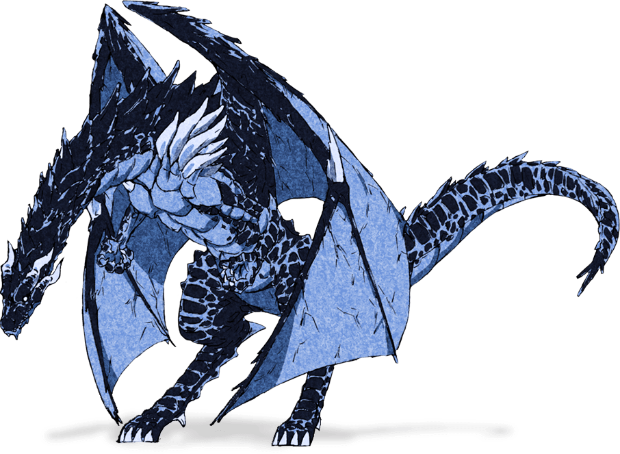

폭풍룡의 칭호를 가진 용종으로 300년이나 갇혀서 그냥 포기하고 사라지는 것 아닐까 걱정하던 중 우연히 만난 슬라임에게 흥미를 가지고[3] 리무루와 서로의 이름을 지어준다. 즉 리무루라는 이름은 베루도라가 지어주었고, 템페스트라는 패밀리 네임은 리무루가 지어준 것. 그래서 서로 친구이자 서로의 이름을 준 가족으로써 베루도라가 준 리무루라는 이름을 리무루가 쓰고 템페스트라는 성을 리무루와 베루도라 둘이서 쓰는 것이다.

위의 인간형의 외모는 정체를 숨기기도 할겸 애초에 부활시키는데 필수적이기도 하니 리무루의 분신체를 이용한 모습이라는데 리무루의 독백에 따르면 비교적 자신의 모습이 남아있는 것 같긴 한데, 호전적이며 싸움을 좋아하는 베루도라의 성격이 섞여서 베루도라가 다루기 좋으며 싸움을 잘할거 같은 외형으로 바뀐 것이라고 한다. 머리색은 컬러일러스트를 보면 백은~옅은 금색.